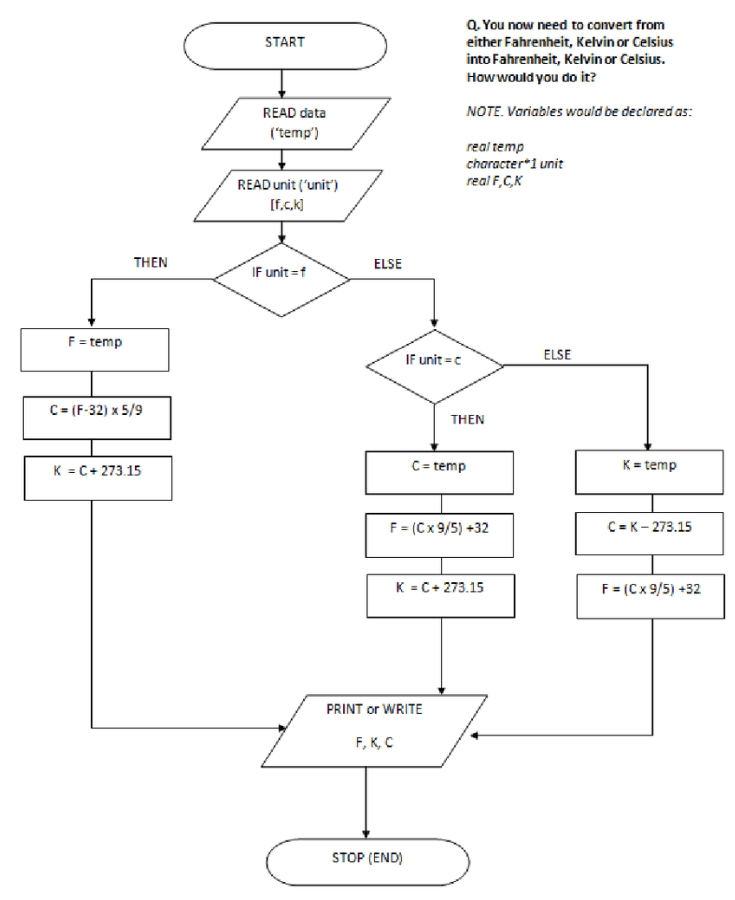

Task 4
- Написать функцию конвертации температур, используя уже готовый код.
-
Должна быть одна основная функция, на вход должна принимать температуру и шкалу.
-
Должны быть описаны отдельно функции конвертации из одной в системы в другую. эти функции должны возвращать высчитанное значение.
-
Вызывать функции в основной там где это надо.
- Написать функцию (рекурсия), которая считает сумму всех чисел от 1 до n, где n - это параметр функции.
Блок-схема для Задачи 1.
